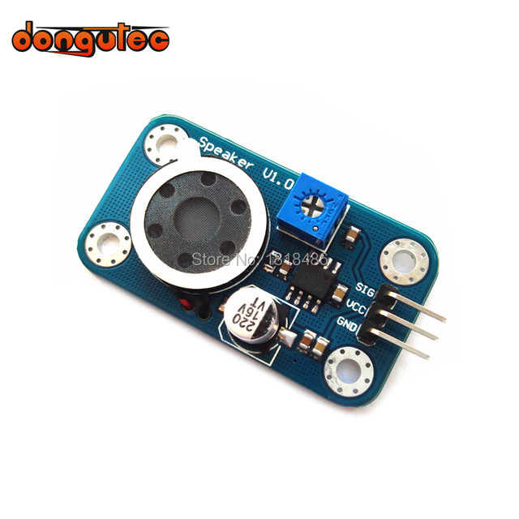
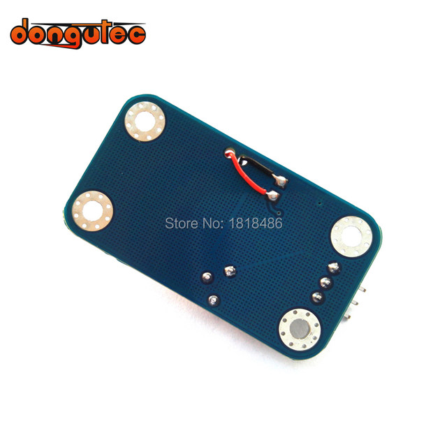

Sound Output Module Speaker Module For Arduino
Description:
The Speaker module is composed of a power amplifier and a loudspeaker. Sound size can be adjusted by the potentiometer on the circuit board. Enter different frequencies, the speakers produce different tones. Can be carried out by for Arduino encoding and DIY their music box!Product data interface
using anti plug,the two sides of the interface are respectively with the letter "D" to represent the signal type for the digital signal and the "speaker" identification module type, the ad hoc 4 M3 fixed mounting holes, adjust direction and the fixed easy to use, beautiful and generous.
Performance description:
1 working voltage:5v
2 size: 25mm x45mm
3 weight: 5g
4 signal type: digital signal
Parameters:
1 Product Name: Speaker module
2 data type: digital input
Package Included:
1 X Sound Output Module

